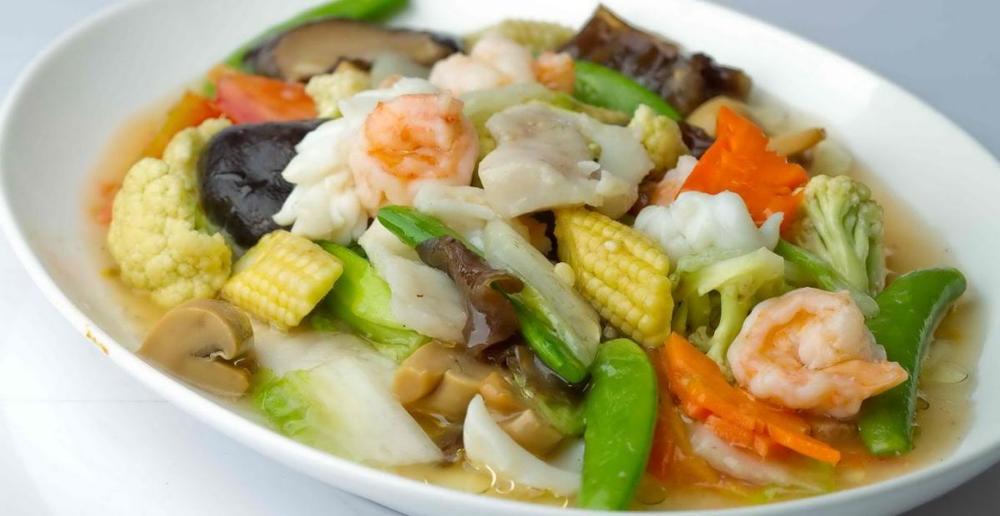

Capcay Kuah Chinese Food
Bahan :
| Sawi hijau | 2 bonggol | |
| Sawi putih | 3 lembar | |
| Wortel | 1 buah | |
| Brokoli | 1 bonggol | |
| Jagung putren | 4 buah | |
| Bakso | 2 buah | |
| Sosis | 1 buah | |
| Udang kecil | 5 buah | |
| Bawang putih | 1 siung | |
| Bawang bombay | 1/4 bagian | |
| Minyak goreng | 2 sdm | |
| Minyak wijen | 1 sdt | |
| Saus tiram | 1 sdm | |
| Totole | 1 sdt | |
| Garam | 1 sdt | |
| Merica bubuk | secukupnya | |
| Tepung maizena | 1 sdt |
Cara memasak :
- Panaskan minyak goreng, lalu tumis bawang putih dan bawang bombay sampai wangi dan layu.
- Masukkan udang, ayam, sosis dan bakso juga garam sambil diaduk-aduk sampai berubah warna dan matang.
- Masukkan seluruh bahan sayur dan masak hingga layu.
- Masukkan tepung maizena yang dicampur dengan air dan saus tiram.
- Masukkan merica, penyedap jamur sitake, minyak wijen, lalu aduk hingga rata dan meresap.
- Setelah sayuran matang dan kuah mendidih, capcay diangkat lalu sajikan.